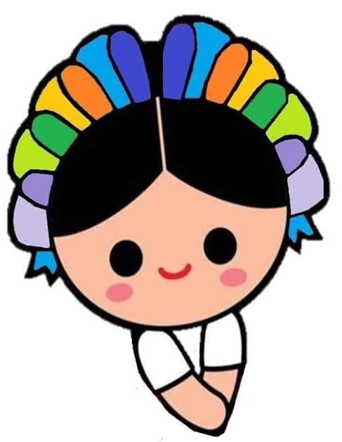

SEPTIEMBRE
"Acontecimientos mas relevantes del mes patrio"

"Acontecimientos mas relevantes del mes patrio"

Mito: Miguel Hidalgo tocó la campana de Dolores la madrugada del 16 de septiembre de 1810.
Realidad: El cura Hidalgo no tocó la campana. Envió al campanero de la parroquia, José Galván, a realizar esta tarea mientras él convocaba a la gente.
Mito: El Grito de Independencia se celebra el 15 de septiembre porque ese día inició el movimiento.
Realidad: El llamado a las armas ocurrió en la madrugada del 16 de septiembre de 1810. El festejo se realiza la noche del 15 debido a una tradición impulsada en el porfiriato para coincidir con el cumpleaños del presidente Porfirio Díaz
Mito: "El Pípila" quemó la puerta de la Alhóndiga de Granaditas como un héroe histórico documentado.
Realidad: No existen pruebas históricas de la existencia de este personaje; se considera una leyenda para representar a los mineros y combatientes anónimos
Mito: La lucha comenzó con la idea de crear una república libre de España desde el primer día.
Realidad: Al principio, el movimiento era autonomista. Hidalgo no peleaba contra la monarquía española en sí, sino contra el mal gobierno, e incluso gritaba a favor del rey Fernando VII
Dos actas de independencia: México cuenta con dos actas diferentes. La primera se firmó el 28 de septiembre de 1821 bajo el nombre de Imperio Mexicano. Tras la caída de Agustín de Iturbide, el documento se renovó en 1823 para establecer el término República
El rostro de Hidalgo: Nadie sabe con certeza cómo era físicamente Miguel Hidalgo en su juventud o madurez. No existen pinturas ni retratos de él hechos en esa época; el rostro que conocemos hoy es producto de descripciones posteriores
Origen de los chiles en nogada: Este platillo típico fue creado por las madres agustinas del convento de Santa Mónica en Puebla. Lo prepararon para celebrar el santo y cumpleaños de Agustín de Iturbide, usando los colores verde, blanco y rojo en honor al Ejército Trigarante
El reconocimiento tardío: España no aceptó formalmente la independencia de México hasta 15 años después de la consumación, en el año 1836